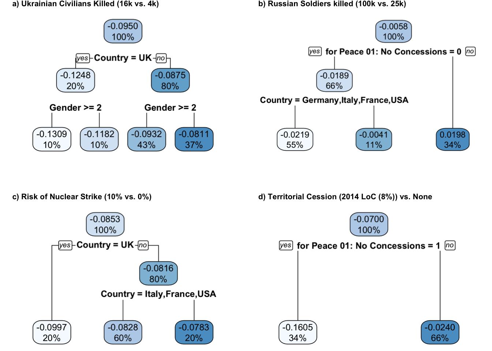
What really matters (and to whom): Investigating heterogeneous effects in high-dimensional conjoint analyses
Contribution
Both authors contributed equally with regard to Formal Analysis, Methodology, Visualization, Writing - Original Draft Preparation, Writing - Review & Editing.
Abstract
This report explores the application of an advanced statistical model based on Bayesian additive regression trees (cjbart; Robinson and Duch 2024) model, to analyze effect heterogeneity in high-dimensional conjoint analyses. The primary focus is on examining citizens’ preferences from five NATO-member countries — USA, UK, Germany, Italy, and France — regarding support for Ukraine amid the Russian aggression. Using conjoint experiment data involving over 10,000 participants, the report investigates how different attributes of support strategies influence decision-making.
Following cjbart approach, we investigate different nested causal quantities. The study shows heterogeneity in attribute-level importance influenced by demographic covariates and political opinions, such as participants’ nationality, gender, and political attitudes. This heterogeneity is further explored using interpretable machine learning techniques, such as variable importance measures of random forests and single decision tree partitioning. For example, UK participants differed to other countries with regard to selection probability changes, particularly regarding the impact of civilian casualties and risks of nuclear strikes. Additionally, the attitudes toward general concessions gave rise to differences in selection probabilities.
We discuss methodological caveats, such as robustness of the cjbart model. We highlight possible issues such as model convergence and the exploratory interpretation of the analysis. The report concludes that cjbart is a powerful exploratory tool for high-dimensional conjoint data, offering nuanced insights into heterogeneous treatment effects. These findings can be used to generate new hypotheses, informing subsequent confirmatory research and political theory.
Introduction
In the social sciences, conjoint analyses are a powerful research design to assess preferences in humans. Under the popular special case of forced choice designs, participants are presented with two options of choice from which they have to choose one, for example certain products in marketing research, or two potential candidates in political research on voting behavior. The two possible options are characterized by certain attributes (also: treatments), which can have different attribute levels (treatment levels), for example the attribute color of a car might have levels white, black, and blue. By randomly mixing the attribute levels and “forcing” participants to choose one of two options across multiple rounds, researchers are able to estimate the relative importance that participants give to certain attribute levels.
Arguably the most commonly estimated causal quantity in conjoint analyses is the average marginal component effect (AMCE). The AMCE is the effect of a specific attribute level of interest compared to a reference level of the same attribute, holding equal the joint distribution of all other attributes and averaged over this joint distribution as well as the sampling distribution from the population (Robinson and Duch 2024). This quantity is estimable by regression models and provides us an effect of an attribute on the probability that a certain option (or profile) will be chosen. As the name AMCE suggests, this estimate is an average. That is, potential differences in effects among participants cannot be considered directly. However, this effect heterogeneity is often of interest, when trying to determine whether an attribute is equally important to all participants regardless of background covariates (e.g., age, gender, education, etc.) or whether there are subgroup differences. Ultimately, it is a question of generalization of results to the entire population and, even more advanced, of causal mechanisms in choice behavior.
The simplest approach to take into account potential effect heterogeneity in conjoint analyses is to estimate the AMCE-models in different subgroups, for example a model for all male and female participants. Although appealing due to its simplicity, this approach quickly reaches its limits and has additional downsides. First, it is not clear how to a priori define the subgroups let alone how and where to include certain interactions. If a continuous covariate age is included in the data, arbitrary splits into distinct groups are necessary. Potential interaction effects would have to be included manually with the likely chance to miss important ones. Needless to say, sample sizes in the subgroups are always smaller than in the whole sample as well, increasing the uncertainty in estimations. This leads to a second issue: conjoint data can quickly become high-dimensional due to many different pairings of different attribute levels (across attributes). Consequently, there are more combinations of attribute levels (and thus, possible options) that should be presented to participants than there are actual rounds of choosing per participant. This leads to some kind of “double high-dimensionality issue”: there are many different attribute (level) combinations and many potential covariates characterizing the participants. This results in a number of possible interactions that are intractable for classical methods (these interactions correspond to the effect heterogeneity mentioned above).
New Approaches to Handle Effect Heterogeneity under High-Dimensionality
To remedy the downsides of the “naive” subgroup approach outlined above, researchers developed more advanced methods based on machine learning. Most notable in this regard are (a) an approach based on Bayesian additive regression trees (in the following called cjbart; Robinson and Duch 2024), (b) an approach based on a Bayesian mixture of regularized logistic regressions (FactorHet; Goplerud, Imai, and Pashley 2024), and (c) a testing approach based on conditional randomization tests (CRT; Ham, Imai, and Janson 2024). In this article, we focus on the explanation and demonstration of cjbart. At the end of this article, we briefly delineate similarities and differences between these three approaches.
cjbart
The premise of cjbart as introduced by Robinson and Duch (2024) is that there are several nested causal quantities underlying the AMCE. Specifically, the AMCE can be decomposed into an individual-level (i.e., participant-level), round-level, and observation-level marginal component effect (IMCE, RMCE, and OMCE, respectively). Let us consider N individuals choosing between J profiles across K rounds (where in the simplest case of binary choices \(J = 2\)). In each round, an individual i is presented with J profiles in which the attribute levels of L attributes are assigned randomly. In the final data set, there are \(N \times J \times K\) rows and \(L + X\) columns (with X being the covariates characterizing the individuals). From these data we now want to estimate the causal parameters of interest, that is, AMCE, IMCE, RMCE, and OMCE. Nested in the AMCE described above, the IMCE is the change in probability that subject i chooses a profile given a specific attribute level (compared to a reference level of the same attribute), again averaged over the effects of all other attributes. This corresponds to subgroup analyses of the AMCE with the convenient addition that the IMCE considers conditional effects based on all possible individual-level covariates. By inspecting the IMCE, effect heterogeneity due to non-randomized characteristics (i.e., the covariates) can be identified. The IMCE further contains the two lower-level quantities RMCE and OMCE. Because for each participant, there are usually multiple rounds of observations (i.e., choices), the RMCE can be obtained as the effect of an attribute within a specific round k of the experiment for a given individual i. Lastly, the OMCE is estimated by additionally conditioning on a specific profile-level (i.e., if \(J = 2\), by conditioning on one of the two profiles). As Robinson and Duch (2024) note, the OMCE does not contain too much substantial information. It is, however, of statistical importance: assuming the OMCE is an independent random draw from an individual-level distribution, we can aggregate the OMCEs to estimate the IMCEs.
In the following, we explain how the IMCEs are estimated. IMCEs can be considered the most important quantity for our purpose of investigating effect heterogeneity because it allows us to analyze how attribute importances differ depending on participant covariates. Robinson and Duch (2024) propose a three-step estimation procedure.
Step 1: Modeling Potential Heterogeneity
In a first step, potential effect heterogeneity is modeled. Specifically, some function is estimated that relates the attribute levels of the L attributes that were shown to subject i in the \(k^{th}\) round in profile j and the covariate vector \(X_i\) to the observed binary outcome \(Y_{ijk}\) (which is equal to 1 if the profile was chosen and equal to 0 if it was not chosen). Robinson and Duch (2024) detail this estimation procedure using Bayesian additive regression trees (BART) but other appropriate models that can estimate this potentially complex functional relationship could be used as well. BART is a supervised learning model somewhat similar to a boosting procedure: across multiple iterations B, M small decision trees are trained subsequently, each one aiming to explain the residual variance of the outcome variable which was not explained by the \(M-1\) previously grown trees. Moreover, the trees in subsequent iterations are not ‘freshly grown’ to fit the residuals but instead are grown by randomly perturbing the very same tree of the previous iteration. The “Bayesian part” in BART is that parameters are seen as random variables (instead of constants, as would be the case in frequentist approaches). Moreover, priors are placed on growing the trees to favor shallow trees and values in child nodes close to zero. An advantage of BART is its robustness to the choice of hyperparameters (e.g., the number of individual trees) but they could be tuned if necessary, for example by cross-validation. The data that is used to train the BART are the data resulting from the conjoint experiment; that is, the different choices of profiles as well as the covariates, which are invariant at the individual-level.
Step 2: Predicting Counterfactual Outcomes
In a second step, the estimated function from step 1 (i.e., the trained BART model) is used to predict counterfactual outcomes by changing the values of attribute levels. These predictions are counterfactual because they did not happen — but we assess what would have been chosen had a certain attribute level been set to a different attribute level of the same attribute. This is done repeatedly by drawing multiple times from a predicted posterior distribution, once with the altered attribute level and once with the reference level of the same attribute. By subtracting these results and averaging them over the multiple draws of the posterior, we arrive at a parameter estimate of the OMCE (i.e., observation-level effects).
Step 3: Calculating IMCEs
Following the nested structure of causal quantities outlines above, IMCEs are calculated by averaging the OMCEs for each individual. Specifically, the OMCE estimates from step 2 are summed and divided by \(J \times K\), that is, the number of profiles times the number of rounds (which is the number of total observations per person). Because the OMCEs result from draws of a posterior distribution, credibility intervals for the IMCE can be constructed by using the empirical quantiles of this distribution.
Identification of Heterogeneity
As mentioned, the main reason why we employ these complicated procedures is because we want to estimate heterogeneous treatment effects. More specifically, we want to assess whether the effects of certain attribute levels on choice behavior are different across individuals. Robinson and Duch (2024) suggest two methods that yield information about which covariates are associated with heterogeneity in effects of attribute levels. Both methods are tree-based which is especially suitable to investigate heterogeneity because trees partition a data set into increasingly homogeneous groups. Thereby, they can reveal covariates that drive the heterogeneity as these covariates will be used for splitting the data.
Tool 1: Random Forest Variable Importance
The first tool uses random forests, an ensemble of decision trees, to investigate which covariates are the important ones in the prediction of differences in the IMCE distributions for all attribute levels (i.e., the effect heterogeneity). Specifically, for each attribute level, a random forest is trained where the covariates \(X_i\) are used as predictors. Subsequently, variable importance measures (VIMPs) are derived to assess which covariates are driving the data partitioning. Briefly, the VIMPs are calculated by permuting the covariates (i.e., by perturbing its values). If predictions change noticeably, this is an indication that the covariate is important for predicting the outcome (i.e., IMCE distributions). Of note, this is done separately for every combination of covariate and attribute level because the importance of a certain covariate may differ with respect to different attribute levels. This results in a comprehensive VIMP-heatmap, which we show as an example in the results section.
Tool 2: Single Decision Tree Partitioning
By combining many weak decision trees, random forests have the advantage of increased predictive performance. However, this advantage comes at the cost of interpretability. Each tree only considers a random subset of predictor variables (in our case: subject-level covariates) and is trained on a bootstrap sample. Thus, Robinson and Duch (2024) suggest a complementary analysis with single decision trees which are grown for a specific attribute level. In this analysis, a decision tree predicts IMCEs for this specific attribute level, again using subject-level covariates as predictors. The partitions within the tree can be readily investigated and interpreted as heterogeneity in IMCEs because only one model is fit to the data set and all predictor variables are considered for splitting. Importantly, to keep decision trees interpretable (i.e., to not let them grow too deep), they have to be pruned by setting a complexity parameter controlling the depth. Robinson and Duch (2024) suggest to set this parameter such that the tree only continues to split the data if the increase in explained variance of the IMCE (i.e., \(R^2\)) is at least 0.02 to 0.04. The predictions in the terminal nodes of the tree correspond to conditional AMCEs, which would normally be assessed by estimating AMCEs in subgroups. However, by using decision trees, which are an exploratory tool by design, no subgroups have to be specified in advance. Even further, trees might even identify interaction effects between multiple covariates, for example by splitting twice on two different variables (e.g., Germans older than 30 years).
Data and Research Question
In the following, we showcase the application of cjbart to data provided by Prof. Dr. Paul Thurner and Fabian Haggerty from the Geschwister-Scholl-Institute of Political Science, LMU Munich. The data were first described in Rudolph, Haggerty, and Thurner (2024). In their work, Rudolph, Haggerty, and Thurner (2024) aimed at investigating which attributes citizens from five different NATO-member countries (United States [US], United Kingdom [UK], Germany, Italy, and France) deem important when deciding whether Ukraine should be supported economically and militarily against the Russian aggression. For this, Rudolph, Haggerty, and Thurner (2024) conducted a conjoint experiment where \(N = 10,011\) participants from the five countries chose one of two possible profiles. In these profiles, nine different attributes with varying attribute levels were manipulated randomly to indicate the consequences that a support of Ukraine would entail if the profile was chosen. The different attributes, their corresponding levels, and the reference categories we used for our analyses are shown in Table 1. Additionally, subject-level covariates were assessed, for example, participants’ age, gender, political orientation, or their country of origin (of the five countries mentioned above).
| Attribute | Attribute Levels |
|---|---|
| Number of Ukrainian soldiers killed? | 1. 12,500 2. 25,000 3. 50,000 |
| Number of Russian soldiers killed? | 1. 25,000 2. 50,000 3. 100,000 |
| Number of Ukrainian civilians killed? | 1. 4,000 2. 8,000 3. 16,000 |
| Value of destroyed infrastructure in Ukraine? | 1. $50B 2. $100B 3. $200B |
| [Country] contribution to military aid to Ukraine? | 1. X bn (0.1% of [Country] GDP) 2. X bn (0.2% of [Country] GDP) 3. X bn (0.3% of [Country] GDP) |
| [Country] contribution to economic aid to Ukraine? | 1. X bn (0.1% of [Country] GDP) 2. X bn (0.2% of [Country] GDP) 3. X bn (0.3% of [Country] GDP) |
| Risk of a Russian nuclear strike on Ukraine? | 1. Not present (0%) 2. Low (5%) 3. Moderate (10%) |
| Territorial cessions of Ukraine to Russia? | 1. No cessions of territory 2. Crimea (ca. 4% of land) 3. 2014 Line of Conflict (ca. 8%) 4. 2023 Line of Conflict (ca. 16%) |
| How much political self-determination of Ukraine? | 1. Full self-determination 2. No NATO/EU membership 3. Russian influence over Ukr. gov. |
To investigate which attributes and attribute levels matter when people decide whether Ukraine should be supported in their defense endeavors, Rudolph, Haggerty, and Thurner (2024) estimated AMCEs as well as marginal means for subgroup analyses. The results of their analyses will be outlined below, where we compare them to the results of our analyses using cjbart. As described above, the “classical” approach of estimating AMCEs and conducting subgroup analyses comes with the disadvantage that the potentially complex heterogeneity of attribute effects cannot be assessed. Additionally, subgroup analyses can only be carried out for a priori defined groups. If covariates have many different levels, it quickly becomes unfeasible to carry out all subgroup analyses. If covariates are continuous, it might even be impossible, unless arbitrarily chosen splits to discretize the data are performed.
Thus, the goal of this project is to complement the existing results reported by Rudolph, Haggerty, and Thurner (2024) with an exploratory analysis. Using cjbart, we are able to scrutinize the data for heterogeneity of attribute effects. Additionally, using the decision tree approach described above, we perform exploratory subgroup analyses. The goal of these analyses is to identify which groups differ in their preferences regarding specific attribute levels.
Method
Data of the above conjoint experiment was modeled by the previously described cjbart approach. For this, we used the R package cjbart described in Robinson and Duch (2024). We fit a BART model containing the profile attributes and various subject-level covariates: age, country, gender, and political orientation, and subjects’ agreement on different political questions and statements (e.g., “The political agenda should focus on the war against Ukraine.”). A list of all covariates, including their type, can be found in Table 2. This resulted in a trained BART model that was used to make the (counterfactual) predictions needed for calculating the quantities of interest, such as IMCEs or AMCEs.
| Covariates | Scale Level |
|---|---|
| Country | Categorical with 5 levels: Germany, UK, USA, France, Italy |
| Age | Continuous |
| Gender | Categorical with 2 levels: male and female |
| Political Orientation | Categorical with 3 levels: left, middle, right |
| The political agenda should focus on the war against Ukraine. |
Categorical: 6-point Likert scale |
| How scared are you by the Russian war against Ukraine? |
Categorical: 7-point Likert scale (not scared at all to very scared) |
| Does military support of [country] matter regarding your current voting intention? |
Categorical: 4-point Likert scale (matters a lot to does not matter at all) |
| The US-American imperialism is the real threat to world peace. |
Categorical: 7-point Likert scale (do not agree at all to completely agree) |
| I can see why Russia feels threatened by the West. |
Categorical: 7-point Likert scale (do not agree at all to completely agree) |
| Would you say that your general opinion of the NATO is very positive, slightly positive, neither positive nor negative, slightly negative, or very negative? |
Categorical: 5-point Likert scale (very positive to very negative) |
| Ukraine should waive a NATO membership if this would bring peace. |
Categorical with 2 levels: yes and no |
| Ukraine should not make any concessions to achieve peace. |
Categorical with 2 levels: yes and no |
| Trading or deliveries of weapons between countries should be prohibited. |
Categorical: 7-point Likert scale (do not agree at all to completely agree) |
| If a country is being attacked and the aggressor is targeting civilians, [country] should provide military support. |
Categorical: 7-point Likert scale (do not agree at all to completely agree) |
| If a country is being attacked and the aggressor is targeting critical infrastructure (e.g., hospitals or electricity and water supply), [country] should provide military support. |
Categorical: 7-point Likert scale (do not agree at all to completely agree) |
| If a country is being attacked (without actual fault) and the aggressor is taking away its land, [country] should provide military support. |
Categorical: 7-point Likert scale (do not agree at all to completely agree) |
In the next step, these (counterfactual) predictions were used to calculate OMCEs. These were aggregated to the different individual- and attribute-specific IMCEs.
To better understand the associations of different subject-level covariates and individual effects of specific attributes (i.e., IMCEs), we used the two tree-based approaches proposed by Robinson and Duch (2024). For this, a random forest model was first fit, predicting the IMCEs using the respective individuals’ subject-level covariates. We then used decision trees to more thoroughly investigate the relationships of specific IMCEs and covariates for which the previous step suggested relevant contribution to the prediction. As already proposed in Robinson and Duch (2024), we found complexity parameter values (cp) between 0.02 and 0.04 to yield useful results. Usage of larger cp values resulted in overly simplified trees often consisting of only a single root node. Smaller cp values, on the other hand, often resulted in overly deep trees with little differentiation across many terminal nodes, making the interpretation of substantive differences too difficult. In the next section, we present the results of these analyses, followed by a discussion and comparison to the results reported by Rudolph, Haggerty, and Thurner (2024).
Results
All analyses including a reproducible can be found at https://github.com/T-Reiter/Statistical_Consulting.
In Figure 1 we present the AMCEs estimated by averaging the IMCEs calculated using the cjbart model.
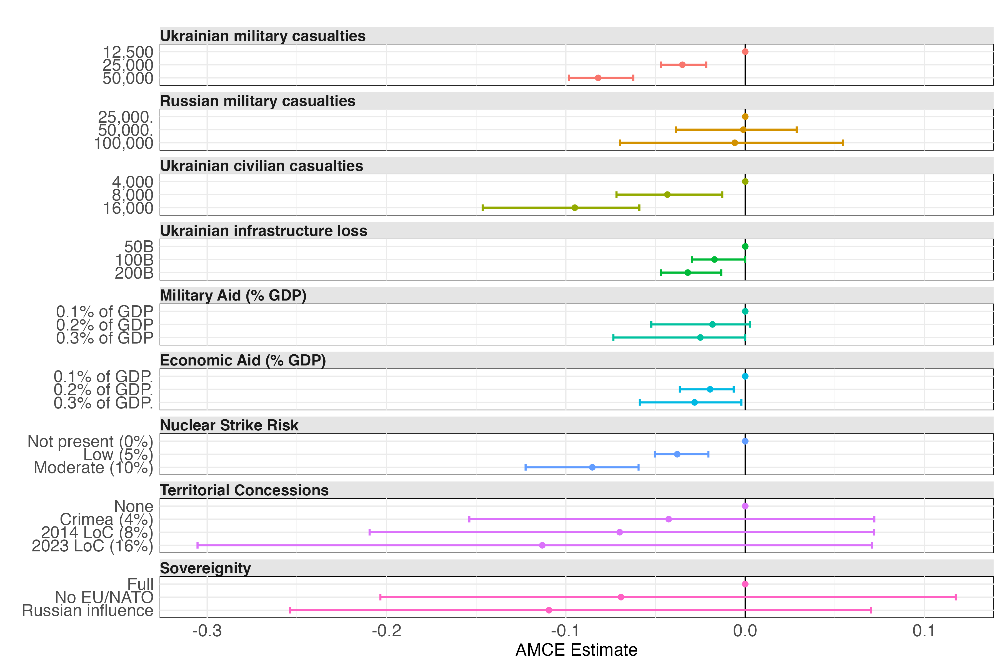
These AMCEs are supplemented with the AMCEs reported in the original article by Rudolph, Haggerty, and Thurner (2024), presented in Figure 2.
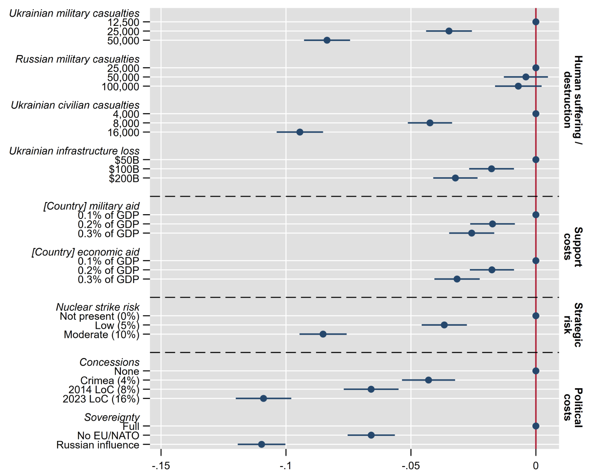
Figure 3 displays the variable importance measures for the subject-level covariates as extracted from the cjbart model. Variable importances are colorized using heatmap-like colorcoding with stronger red (vs. white) color indicating larger importance measures.
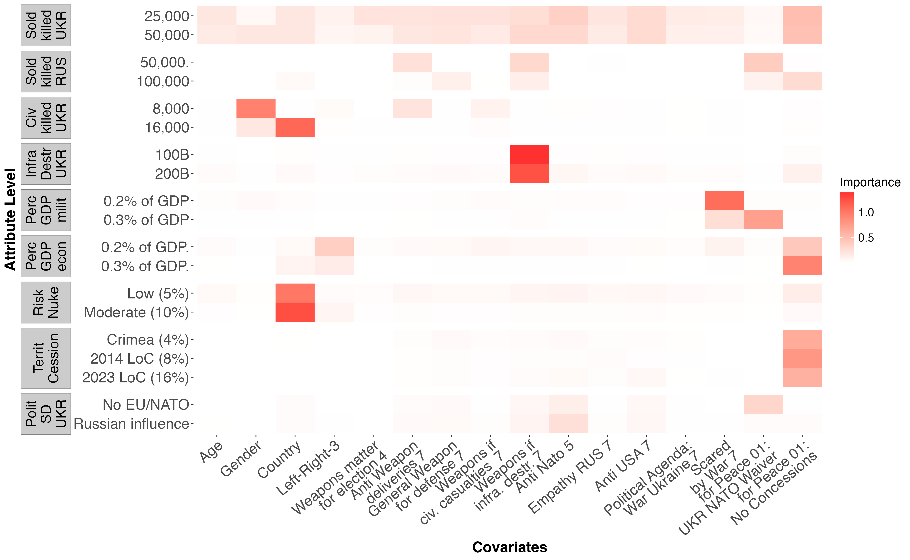
Figure 4 depicts 4 exemplary decision trees that were fit to better understand how different subject level covariates contribute to effect heterogeneity. These decision trees were selected based on content-related and interpretational criteria and to highlight how single decision tress can be utilized for model interpretation.
Discussion
Integration of Results
For AMCEs, theoretically most favorable events served as reference categories (e.g., least amount of soldiers killed). As can be seen, increased attribute levels (i.e., less favourable events) were usually linked to significantly decreased levels of support. For example, increasing the risk of a nuclear strike from the reference level ‘Not present (0%)’ to ‘Moderate (10%)’ decreased the average probability of a participant choosing the latter profile by about 8.5 percentage points. The AMCE point estimates were in line with the AMCEs reported in Rudolph, Haggerty, and Thurner (2024), which is why we refrain from an in-depth discussion here and refer the interested reader to their article.
As a next step, we fit a random forest model to predict subject-level IMCEs using the subject-level covariates. Based on this model, we then calculated variable importance measures which served as indicators for variables associated with effect heterogeneity. We found the highest variable importance values for the subject-level covariates country, gender, and the items asking participants about whether they generally support supply of weapons to countries defending themselves against other country’s invasions and whether Ukraine should make any concessions in order to achieve peace.
As already outlined, these variable importance measures do not provide any more interpretability than which covariates in general seem to matter. This is why we further substantiated the previous analysis by fitting single decision trees to different IMCEs. IMCEs for this were selected based on contentual characteristics and to highlight how decision trees facilitate interpretation of effect heterogeneity. As can be seen in Figure 4 (panel a), for participants from countries different to the UK the probability to select a given profile decreased by -12.5 percentage points if the respective profile was associated with 16,000 (vs. 4,000) Ukrainian civilian casualties. For participants from the UK, the larger number of civilian casualties was also linked to a lower profile selection probability, although, the attribute level was less influential for their decision. In general, many trees performed splits based on whether participants were from the UK or the other countries included. For example, this was also the case for the attribute regarding the risk of a nuclear strike when comparing the risk of ‘10%’ with the reference level of ‘0%’ (Figure 4, panel c). These UK versus Non-UK splits possibly indicate slight differences in attitudes towards weapon supplies across these countries. Moreover, for female participants (within both UK and Non-UK subgroups) the probability for selecting profiles with 16,000 vs. 4,000 Ukrainian civilian casualties, decreased stronger than for male participants, although differences were less pronounced than for the country covariate.
Apart from this, participants’ attitude about whether the Ukraine should make any concessions to Russia if this would lead to a peace agreement predicted some level of effect heterogeneity to an interesting extent. For example, with regard to Russian soldiers killed (Figure 4, panel b), people who responded that Ukraine should not make any concessions, had a higher probability to select profiles with a larger number of Russian military casualties (100,000 vs. 25,000). Interestingly, out of the investigated IMCE decision trees this was the only case for which we observed splits resulting in nodes with different signs meaning that the probability of profile selection decreased in one child node and increased in the other. These results have, however, to be interpreted with caution as the split cannot be interpreted as a sign of statistically significant differences between the terminal nodes (e.g., Zeileis, Hothorn, and Hornik 2008). Moreover, for this result, though having different signs, the differences in probability are still small (less than 2 percentage points) and close to zero. Lastly, for the attribute regarding how much cession of Ukrainian territory a selected profile would result in (Figure 4, panel d), we once again found the general attitude towards Ukrainian concessions to predict effect heterogeneity. People who responded that Ukraine should make no concessions were 16 percentage points less likely to select profiles with the ‘comparably moderate negative outcome’ of Ukraine loosing 8% of their territory (resembling the 2014 Line of Conflict) (vs. reference level ‘None (0%)’). For people that did not select the no concessions option, profile selection probabilities for the same attribute level decreased by only 2.4 percentage points.
However, as already outlined by some authors (Goplerud, Imai, and Pashley 2024; Robinson and Duch 2024), the above AMCEs cannot be used to reason about absolute profile selection probabilities but instead are relative in nature. Accordingly a given AMCE has always to be interpreted as change in profile selection probability relative to a given reference level of the same attribute. This still holds when comparing IMCEs across different subsets of participants, no matter whether these partitions were (or were said-to-be) defined theory-based (as in classical subgroup analysis) or generated in a more data-driven manner (as in the previous approach). Accordingly the average IMCEs in the different terminal nodes of the decision trees are always relative to the baseline profile selection probability taking into account the reference level and the subgroups of participants. In order to reason about the absolute selection probability for a given attribute level using the associated AMCE, the absolute selection probability for the respective reference level must be known. The often applied approach of calculating marginal means provides exactly these marginalized absolute profile selection probabilities for different attribute levels. This allows for straightforward reading off the absolute profile selection probabilities. However, as marginal means are solely descriptive, they do not allow for any causal interpretation. Accordingly, whether AMCEs or marginal means are used should be guided by the kind of conclusions that shall be made. As in the present case the goal was to understand how different subject-level covariates affect decisions-making in the presence of different weapon supply attributes, AMCEs are the right choice for answering this question.
Methodological Discussion
The methodological advantages of cjbart over existing methods to estimate AMCEs and conduct subgroup analyses have been discussed above. To briefly recap, cjbart can estimate complex relations regarding attribute level importances, thereby taking potential effect heterogeneity into account. Using tree-based follow up analyses, variable importance measures (i.e., which covariates matter for which attribute level) can be calculated. Additionally, users can calculate IMCE differences predicted by person-level covariates to investigate heterogeneity in an exploratory manner. In closing, we now discuss some important methodological points and potential limitations that should be kept in mind when applying cjbart to conjoint designs.
First, cjbart is, like all tree-based methods, a rather exploratory method. This allows for a data-driven investigation of effect heterogeneity without a priori specification of subgroups (when combined with follow-up analyses). However, it also impedes a confirmatory approach to answering hypotheses about underlying theories. For the follow-up analyses using single decision trees, any reasoning from effects of covariates on IMCEs (e.g., people who oppose concessions for peace agreement favor larger territory cessions less) must be done with caution. That is, they cannot readily be interpreted as directed nor as a causal effect of covariates on IMCEs. The “naive” approach of investigating attribute levels that stand out in the variable importance heatmap (like we did above), is useful for hypothesis generation. Effects that were found and that seem to align with political theory could now be investigated in more detail. Using appropriate study designs (e.g., experimental settings) or modeling strategies (e.g., confounder adjustment) would now be necessary to investigate the direction of effects and to approach the hypotheses in a more causal manner.
Second, and closely related, while the decision trees offer an easy interpretation of subgroup differences, they do not provide information on whether these differences are statistically significant. This is because decision trees as implemented by Robinson and Duch (2024) and also in our article base their split decision on a maximal reduction of impurity. That is, the goal of decision trees is to partition the data so that observations in the resulting nodes are as homogeneous as possible (in the sense of reduced variance in nodes). These splitting decisions are, however, not based on statistical inference. Consequently, any two given terminal nodes that show differences (in IMCEs, in our case) do not necessarily show statistically significant differences. Domain expertise when interpreting the results is needed to reason about whether the differences are practically meaningful. For example, for the result of changed signs in IMCEs reported above, it is a theoretical and content related question whether the difference of around 2 percentage points is relevant. A possible extension would be to use a different decision tree algorithm, for example conditional inference trees (e.g., Hothorn, Hornik, and Zeileis 2015) These types of trees base their split decisions on non-parametric hypotheses tests. Nonetheless, domain expertise would still be needed to assess whether a statistically significant split is substantially meaningful.
Third, more simulated and empirical research on cjbart is needed to properly assess the stability of its solutions. Internally, the cjbart() function as implemented by Robinson and Duch (2024) calls the mc-pbart() function from the BART package (Sparapani, Spanbauer, and McCulloch 2021). This function estimates complex relations using the BART model described above and uses a seed1 (which defaults to 99). Thus, when repeatedly used on the same data, users should always receive the same results (of AMCEs). Simulation studies should be conducted to assess the variability in results when seeds are changed. Additional variance in results is then introduced when using random forests to assess variable importances. This step should be included in these simulations to investigate whether, and if yes, how strongly changes in BART results are perpetuated in the variable importance results. Other factors that might influence cjbarts results are the specific settings of hyperparameters. Hyperparameters are second-order parameters that cannot be estimated by the data but that have to be set prior to estimating the model. Examples of hyperparameters of the cjbart model are the number of individual trees that are grown sequentially and the number of cut points that are investigated (i.e., the number of “segments” of, for example, age for which a split is considered). In our analyses, we used the default values of these hyperparameters (50 trees and 100 cut points). However, it would also be possible to tune these values, that is, to try out different settings and choose the most optimal values (with respect to some evaluation metric). Because tuning hyperparameters can be computationally expensive, it is an interesting topic of future methodological research to assess whether tuning in the case of cjbart is worth the additional computational burden. Tuning hyperparameters would also be possible for the random forest when calculating variable importances. However, random forests have been shown to have good performance with default values of its hyperparameters (Strobl, Malley, and Tutz 2009), so we believe the focus should be on the hyperparameters of the upstream BART model.
Forth and last, cjbart is not the only method to take potential heterogeneity in attribute level effects into account. As mentioned in the introduction, two other methods are FactorHet by Goplerud, Imai, and Pashley (2024) and the CRT approach by Ham, Imai, and Janson (2024). FactorHet works based on a Bayesian mixture of regularized logistic regression analyses. The goal is to identify maximally heterogeneous groups of respondents for which similar patterns of attribute level effects apply. The membership probability to belong to a certain group, also called cluster, is modeled as a function of the person-level covariates. This allows users to investigate person characteristics (like country of origin or age) that are indicative of belonging to certain patterns of attribute level effects. While this yields interpretable results with regard to the question of “what matters to whom”, it has the important downside that the number of clusters is a hyperparameter that has to be set prior to estimating the model. Thus, the question arises which model to select. It might be a good strategy to estimate the model with different numbers of clusters and then use domain expertise and interpretability to choose a solution. However, this should be made with caution to not let post-hoc explanation guide the decision. Future research concerning FactorHet could develop model selection strategies, like information criteria, that are comparable across solutions with differing numbers of clusters and allow for a statistical decision. We complemented our analyses with an exemplary run of the FactorHet method. The results of this analysis (with a two- and three-cluster solution) can be found in Appendix A6. The other method, CRT by Ham, Imai, and Janson (2024), is a statistical hypothesis testing approach based on conditional randomization tests. The goal of this approach is to assess whether a specific attribute of interest influences participants’ choice behavior in any way, given all the other attributes. The advantage of CRT is that this answers the most basic question one can ask in conjoint experiments, while being assumption-free. This is due to the fact that the underlying testing approach works solely on the randomization of attributes. However, in these analyses, it remains challenging to investigate the influence of person-level covariates on individual-level preferences (i.e., IMCEs). Taken together, all novel approaches have their own strengths and weaknesses when trying to unravel heterogeneity in attribute level effects. As in every statistical analysis, the choice of methods and models crucially depends on the research question and desired inferences one wants to make. Because our goal was to complement the existing analyses reported by Rudolph, Haggerty, and Thurner (2024) with a maximally exploratory approach, potentially informing future more confirmatory research, we found that cjbart best fits this purpose.
A Note on Robustness
In the course of the project, our project partner and we noticed that solutions of cjbart differ (slightly) when rerunning the analysis (using different seeds or no prespecified seed on Windows machines). One possible reason was that the models failed to converge. To investigate this issue in more detail, we reran the analysis 20 times (i.e., estimating the model with BART and extracting the OMCEs/IMCEs/AMCEs). The results of this analysis can be found in appendices A1-5. In A1, the point estimates of AMCEs across the 20 iterations are displayed. As can be seen, AMCEs do not fluctuate noticeably. When looking at the ranges of IMCEs per person (A2), we observe that the IMCEs for some attributes fluctuate by around five to seven percentage points (most noticeably for attributes “Territorial cessions of Ukraine to Russia” and “How much political self-determination of Ukraine”). Because we assumed that failed convergence might be an issue, we explored exemplary traceplots, showing the draws from the reference level and the level of interest posterior distribution (the difference of which corresponds to the OMCE). These traceplots are shown in A3 and A4. We can see that for none of the displayed chains, the values of draws converge to a stable value which in turn leads to fluctuations in OMCEs. This is the case for both the default sized model and a larger model with increased burn-in and posterior draws. Consequently, the model seems to have convergence issues. This finding is corroborated by the figure in A5, which shows the distribution of p-values for the Geweke’s test (Geweke 1992) whether the Markov chain converged (where the null hypothesis can be interpreted as convergence). Thus, we would be cautious to interpret IMCE results, especially for attributes which show a high range of person-specific IMCEs in A2.
Conclusion
Complementing the analyses reported in Rudolph, Haggerty, and Thurner (2024), we used the novel cjbart approach by Robinson and Duch (2024) to scrutinize the present conjoint data for effect heterogeneity. Specifically, we found that the importance of certain attributes (levels) differed with regard to country, where differences were most pronounced for the distinction UK vs. the other four countries. For example, for all five countries selection probabilities decreased with increasing civilian casualties but the effect was stronger for non-UK participants. Similarly, the opinion that Ukraine should not make any concessions to Russia to end the aggression predicted some heterogeneity. People who oppose concessions favored profiles that were associated with higher numbers of killed Russian soldiers, while for concession proponents the selection probability decreased.
With AMCE estimates similar to the primary analysis reported by Rudolph, Haggerty, and Thurner (2024), we believe that the newly developed cjbart-method provides a powerful tool to investigate effect heterogeneity in high-dimensional conjoint data. As with any new method, further methodological research is needed to assess the capabilities of the method under different conditions. Most importantly, the results of cjbart should always be interpreted as what they are: an exploratory peek into underlying causal relations between covariates and individual preferences for certain attributes (i.e., IMCEs). Our recommendation is to use these exploratory insights to generate hypotheses that can subsequently be tested to inform political theory.
Appendix
A1 AMCE Stability across Multiple Model Fitting Iterations
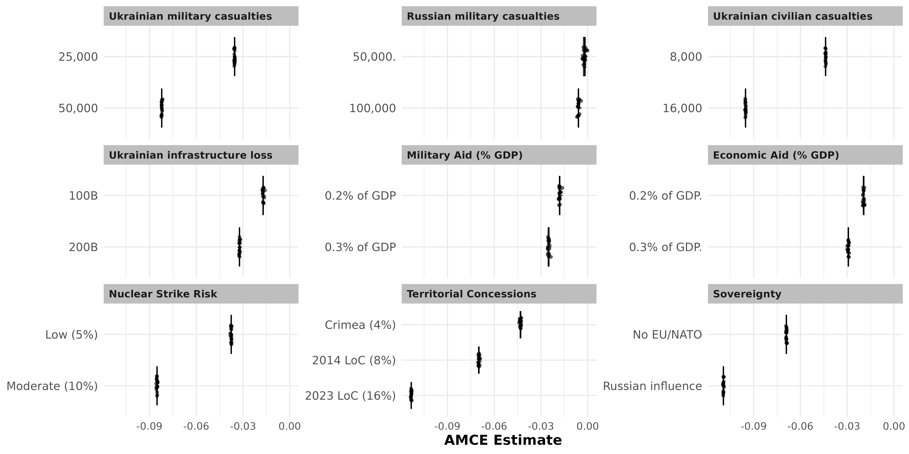 Note. AMCE point estimates across 20 model fitting iterations using different seed values.
A2 IMCE Stability across Multiple Model Fitting Iterations
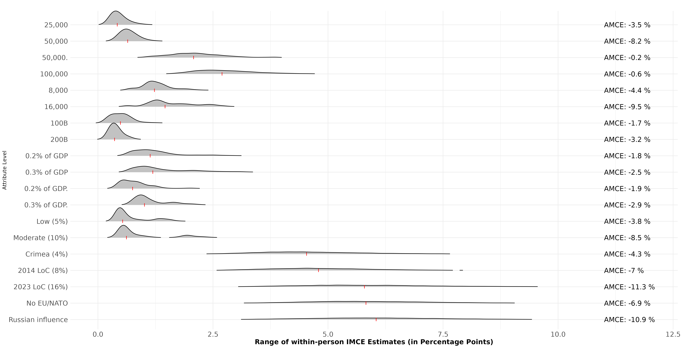
Note. Distribution of Within-Person IMCE Range across 20 model fitting iterations using different seed values. Each data point used to generate the empirical distribution describes the range of the IMCE values calculated for each individuals’ IMCEs.
A3 Convergence Diagnostic Traceplot - Attribute: Ukrainian Soldiers Killed
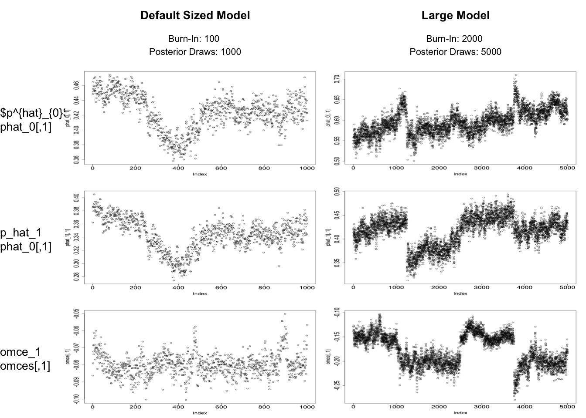
Note. Rows 1 and 2 display Traceplots of Draws from the BART Posterior Distribution for the selection probabilities (p_hat_0 and p_hat_1) if Attribute 1 (Ukrainian Military Casualties) was set to the reference level (i.e., 12,500) or first level of interest (i.e., 25,000). Row 3 represents the associated OMCE ‘draws’ calculcate by taking the different of p_hat_1 and p_hat_0. Columns 1 and 2 contain draws from the default sized BART model (Burn-In: 100, Posterior Draws: 1000) and larger BART Models (Burn-In: 1000, Posterior Draws: 5000)Models were fit using parallel computation on 4 cores.
A4 Convergence Diagnostic Traceplot - Attribute: Sovereignity
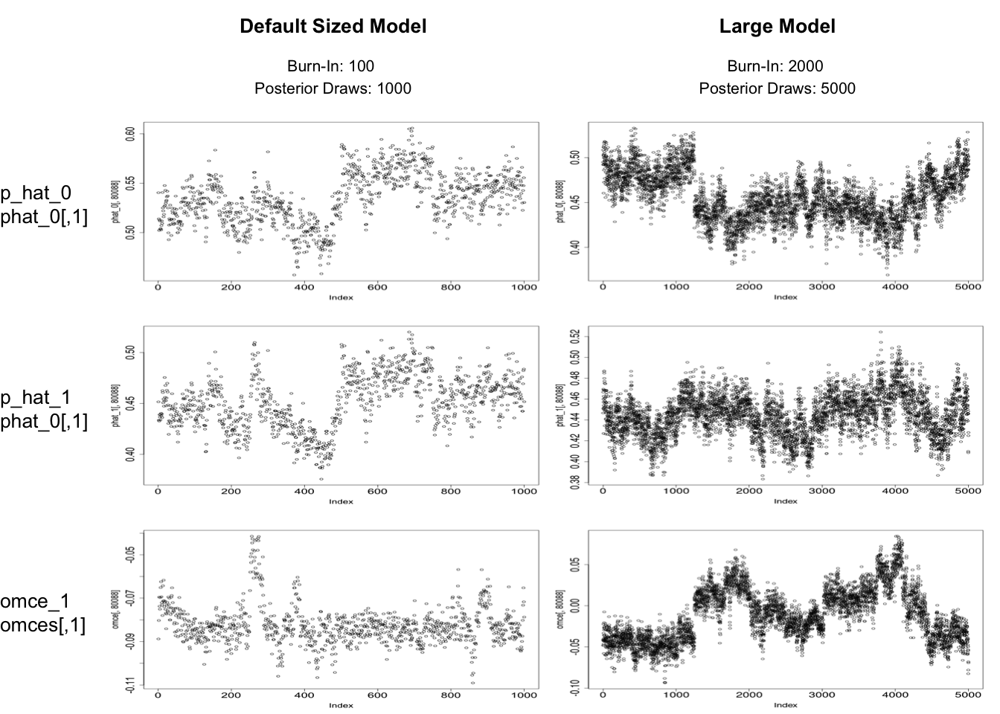
Note. Rows 1 and 2 display Traceplots of Draws from the BART Posterior Distribution for the selection probabilities (p_hat_0 and p_hat_1) if Attribute 9 (Sovereignity) was set to the reference level (i.e., ‘Full’) or first level of interest (i.e., ‘EU/NATO’). Row 3 represents the associated OMCE ‘draws’ calculcate by taking the different of p_hat_1 and p_hat_0. Columns 1 and 2 contain draws from the default sized BART model (Burn-In: 100, Posterior Draws: 1000) and larger BART Models (Burn-In: 1000, Posterior Draws: 5000).Models were fit using parallel computation on 4 cores.
A5 Convergence Diagnostics - Geweke’s Diagnostic Criterion
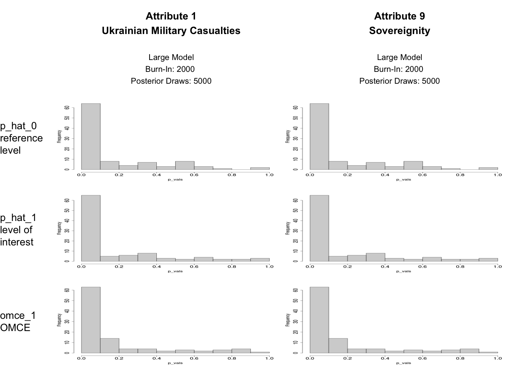
Note. Images display the p-value distribution of Geweke’s Convergence Diagnostic Test (as implemented in r package BART) applied to a random sample of 100 Random Markov Chains as generated using the BART model with larger-than-default values for Burn-In and Posterior Draws. Geweke’s Test is used for diagnosing Markov Chain convergence via testing equality of means of the 10 and last 50 percent (default values) of the posterior draws.
A6 2-Cluster Solution of the FactorHet Models
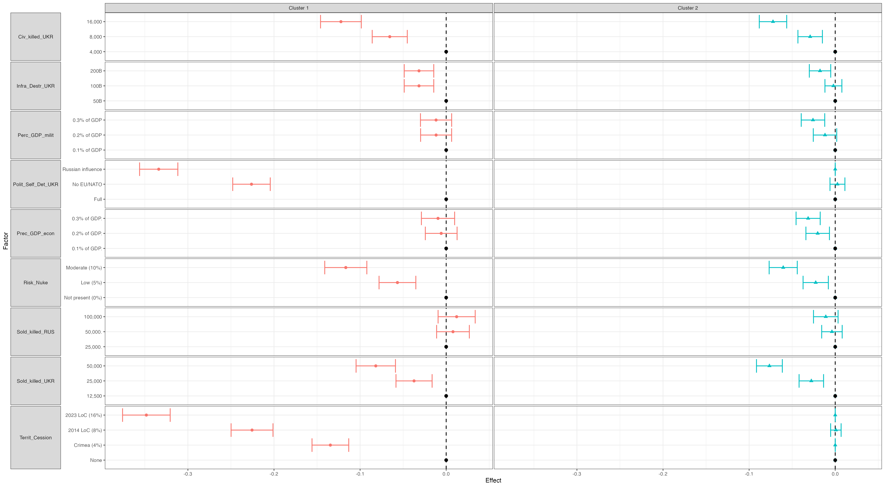
Note. AMCEs estimated using a FactorHet Model with a pre-set number of 2 clusters.
A6 3-Cluster Solution of the FactorHet Models
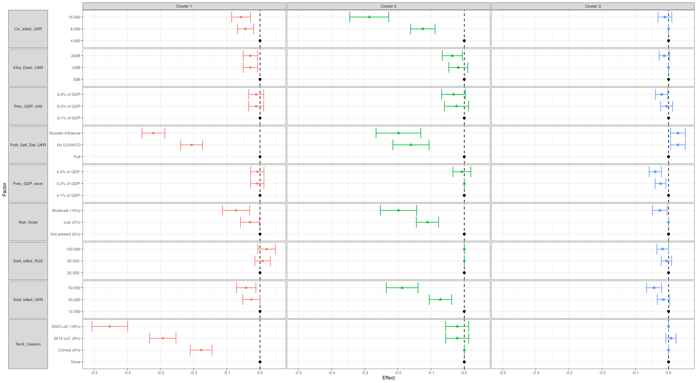
Note. AMCEs estimated using a FactorHet Model with a pre-set number of 3 clusters.
References
Geweke, John. 1992. “Evaluating the Accuracy of Sampling-Based Approaches to the Calculations of Posterior Moments.” Bayesian Statistics 4: 641–49.
Goplerud, Max, Kosuke Imai, and Nicole E. Pashley. 2024. “Estimating Heterogeneous Causal Effects of High-Dimensional Treatments: Application to Conjoint Analysis.” arXiv. https://doi.org/10.48550/arXiv.2201.01357.
Ham, Dae Woong, Kosuke Imai, and Lucas Janson. 2024. “Using Machine Learning to Test Causal Hypotheses in Conjoint Analysis.” Political Analysis 32 (3): 329–44. https://doi.org/10.1017/pan.2023.41.
Hothorn, Torsten, Kurt Hornik, and Achim Zeileis. 2015. “Ctree: Conditional Inference Trees.” R Package.
Robinson, Thomas S., and Raymond M. Duch. 2024. “How to Detect Heterogeneity in Conjoint Experiments.” The Journal of Politics 86 (2): 412–27. https://doi.org/10.1086/727597.
Rudolph, Lukas, Fabian Haggerty, and Paul Thurner. 2024. “Citizen’s Resolve Against Autocratic Aggression: Survey Experimental Evidence from Five NATO Countries on Supporting Ukraine.” OSF. https://doi.org/10.31235/osf.io/7smvx.
Sparapani, Rodney, Charles Spanbauer, and Robert McCulloch. 2021. “Nonparametric Machine Learning and Efficient Computation with Bayesian Additive Regression Trees: The BART r Package.” Journal of Statistical Software 97 (January): 1–66. https://doi.org/10.18637/jss.v097.i01.
Strobl, Carolin, James Malley, and Gerhard Tutz. 2009. “An Introduction to Recursive Partitioning: Rationale, Application, and Characteristics of Classification and Regression Trees, Bagging, and Random Forests.” Psychological Methods 14 (4): 323–48.
Zeileis, Achim, Torsten Hothorn, and Kurt Hornik. 2008. “Model-Based Recursive Partitioning.” Journal of Computational and Graphical Statistics 17 (2): 492–514.
Footnotes
It should be highlighted that the function-internal seed does not work on machines with a Windows operating system. Consequently, each function call to cjbart() might result in (slightly) different results.↩︎